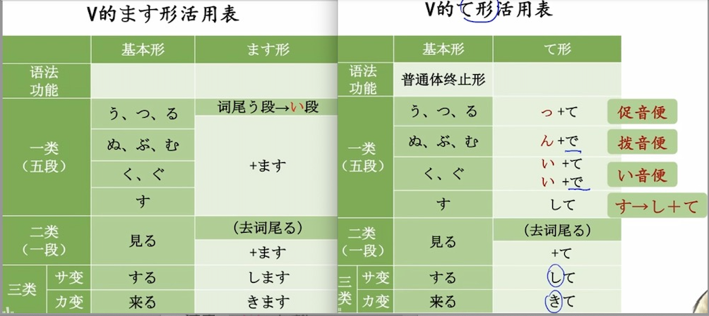

第十四课 原稿 げんこう 动词形态
动词活用
一类动词 词尾：う・つ・る/ぬ・ぶ・む/く・ぐ/す
二类动词 词尾：i 段 / e段 + る
三类动词：サ、カ变动词
く
来る 来ます
する します
勉強する 勉強します

李：吉田課長、原稿が できました。
きじ
吉田：箱根の記事ですね。ちょっと 見せて ください。
吉田：なかなか いいですね。いつ 書きましたか。
せいり
李：昨日会社で メモを 整理して、小野さんに 見せました。そして、アパートへ 帰ってから 書きました。
吉田：そうですか。大変でしたね。写真も できましたか。
えら
李：はい。これから 長島さんの事務所へ行って、写真を選びます。
吉田：そうですか。
あと
李：後で、写真も見てくださいませんか。
で
吉田：李さん、もう 会社を 出ますか。
かね お
李：はい。銀行で わ金を 下ろしてから 行きます。
だ
吉田：じゃあ、郵便局の 近くを 通りますね。 すみませんが、この 手紙を 出して ください。
そくたつ だ
李：はい。速達で 出しますか。
吉田：ええ、そうして ください。
こう、そう、ああ、どう ＋ 动词